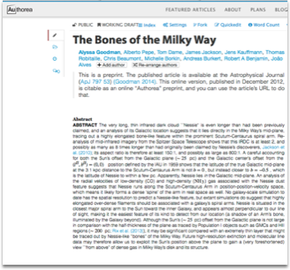
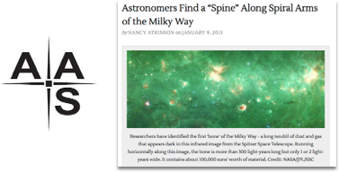

Once the collaborators are confident that Nessie lies in exactly the right position on the Sky, and at exactly the right velocity (distance), to be associated with the “Scutum-Centaurus” arm of the Milky Way, they publish an open preprint describing their results. The preprint explains that Nessie is much longer than had been believed, and that its position and structure imply that it is like a “Bone of the Milky Way”, a very long and thin cloud of dense gas that traces out the Galaxy’s structure.

The American Astronomical Society hosts a press conference about
the results in 2013.
Click to see what happens next. >